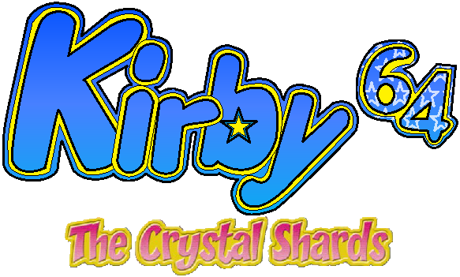
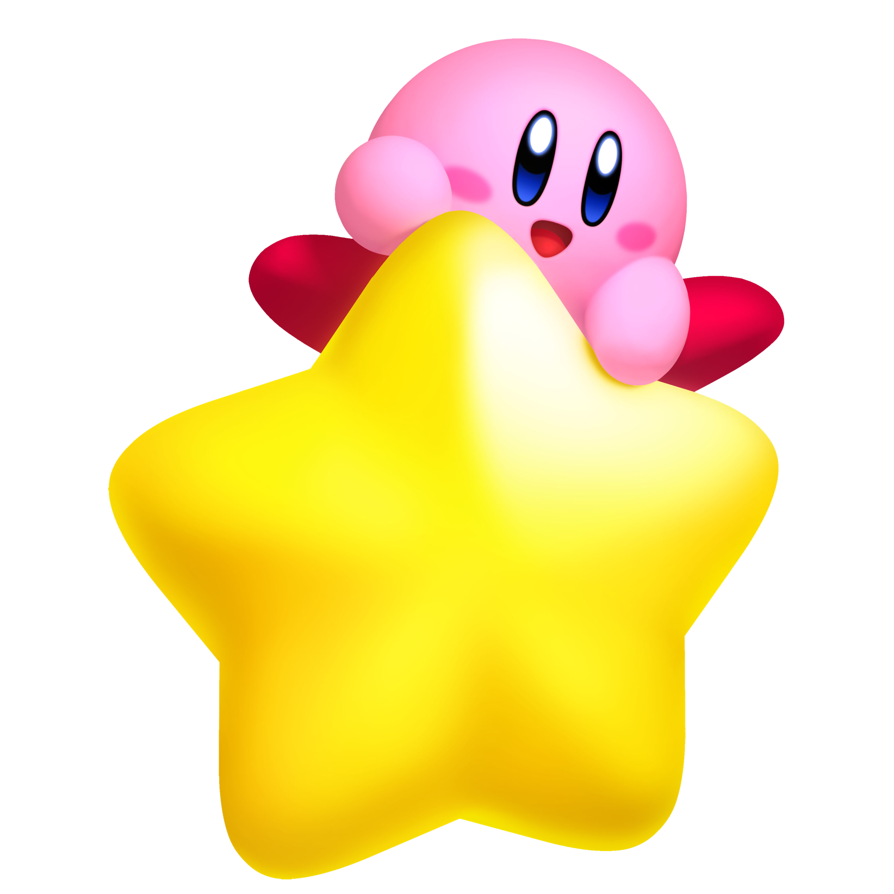

Tarefa 1
Página temática

Kirby para a geração 64!
•Ajude Kirby e seus amigos a recuperar os fragmentos dos cristais e derrotar o novo vilão Dark Matter com os novos combos e junção de poderes!•
•Junte seus amigos e complete até 3 minigames!•
Kirby já chegou para os consoles do Nintendo 64® e já pode ser comprado em qualquer loja official da Nintendo®
